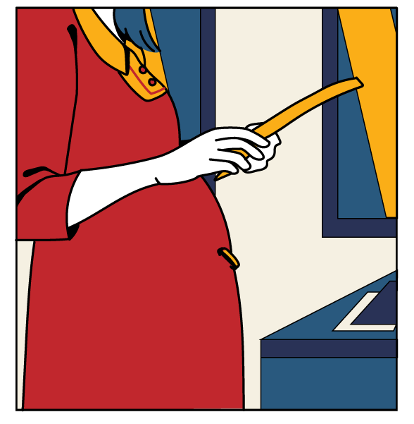
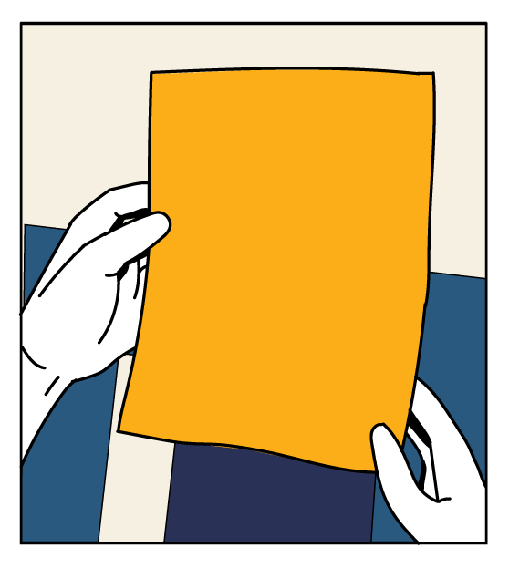
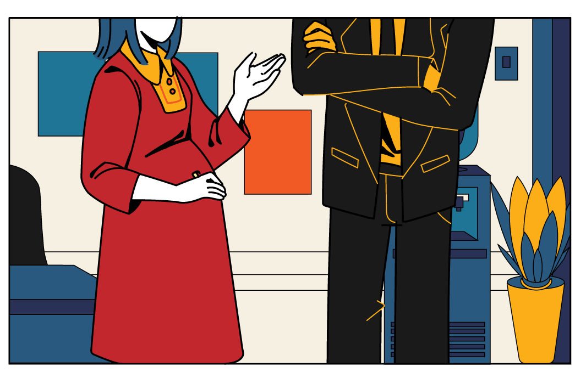

PART THREE
BENEFIT
ฉันเป็นหัวหน้าแผนกของบริษัทแห่งหนึ่ง
หลังจากแต่งงานได้ปีกว่า
ฉันก็ท้อง
แต่ฉันก็ยังต้องมาทำงาน
ถึงแม้จะลาคลอดได้ก็ตาม
แต่งานก็ยังคงรั้งฉันไว้อยู่
แค่เรื่องงานก็เครียดมากพอแล้ว
ยังจะต้องมาเจอเพื่อนร่วมงาน
ที่ไม่เคยจะเข้าใจอะไรอีก
เออนี่ แล้วสรุปเธอจะลาหรือเปล่า?
ลาสิ
ใกล้จะถึงกำหนดคลอดแล้ว
คงต้องลา
มันเป็นสิทธิของฉัน
ยังดูอยู่เลย
แต่คิดว่าน่าจะลาแหละ
ลาจ้ะ
นี่ฉันเเบ่งงานส่วนของฉันไว้แล้ว
ฉันเข้าใจเธอนะ แต่มันก็เดือดร้อนต่อ
เพื่อนร่วมทีมของเธอจริง ๆ ที่จะต้อง
มารับภาระงานแทนเธอ ตั้ง 3 เดือน
เป็นคนท้องนี่มันดีจังเลยนะ
ลาหายแล้วโยนงานให้คนอื่นได้ด้วย
ฉันเข้ามาในห้องประชุม
ที่มีลูกน้องนั่งคุยรอเวลา
เห็นว่าพี่เขา
จะลาคลอดนะ
ภาระงาน
พวกเรา
ก็จะหนักขึ้นสิงี้
เป็นเฮดงาน
ซะเปล่า
เสียงาน
เสียการ
กันพอดี
ซึ่งก็ไม่พ้นคำนินทา
เกี่ยวกับเรื่องของฉันเอง
เรื่องลาคลอดก็ต้องทำ


ฉันเริ่มไม่เเน่ใจแล้ว
ว่าฉันจะยังลาคลอดดีมั้ย
บางทีการปรึกษาหัวหน้า
อาจจะทำให้หาทางออกได้
